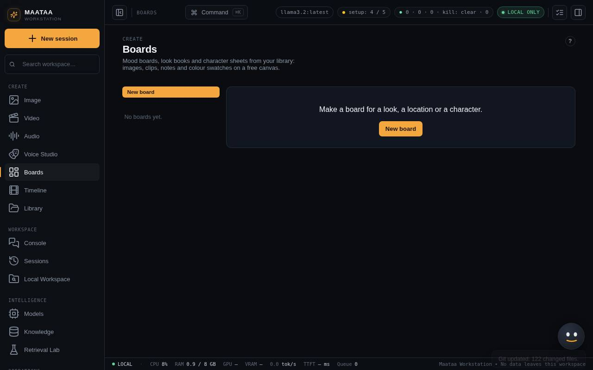
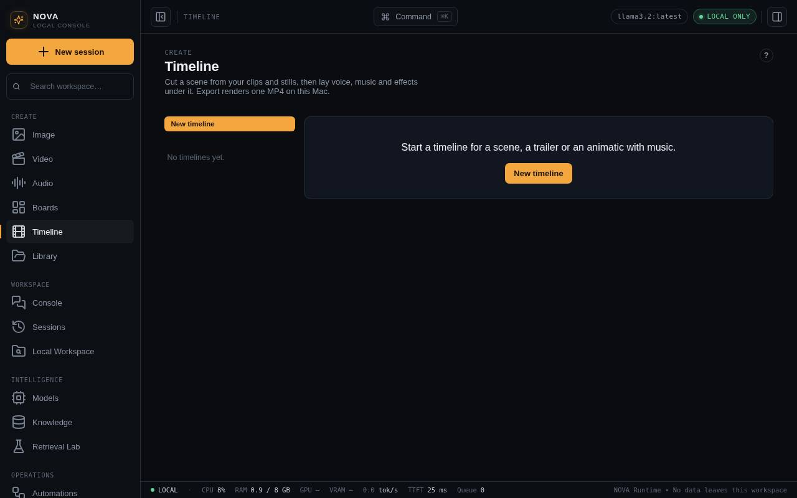
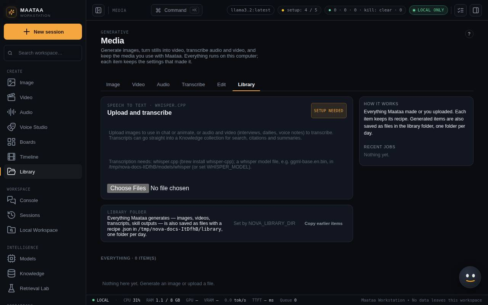

Boards, Timeline and Library
Arrange references on boards, cut a scene with sound on the timeline, find everything NOVA makes as files, and watch generation in the Tensor view.
Boards
Mood boards, look books and character sheets. Press New board, then add From library (images and clips), Upload, Note or Colour.
- Drag items to arrange them; drag the bottom-right corner to resize.
- Double-click a note to edit it; Escape or clicking away finishes.
- × removes an item from the board (the library item stays).
- Save as image renders the board as a PNG into the library.
Boards save automatically and point at library items, so nothing is copied.

Timeline
Cut a scene. The Picture track plays clips and stills in order; Voice, Music and Effects tracks hold sound that starts at a time you choose.
- Add clips and Add sound pick from the library (or use Add to timeline… on a library item).
- Click a block to trim it (In/Out), set a still's Seconds, a clip's Clip sound level, or a sound's Starts at, Level and fades.
- Drag picture blocks to reorder them and sound blocks to move them in time.
- Choose the frame size and frame rate, then Export MP4. Every shot is fitted to the frame (letterboxed, never stretched) and the sound is mixed. The result lands in the library with a recipe listing every shot and sound.

Library
Every image and video NOVA makes, every transcript and every skill output is also saved as an ordinary file in ~/Documents/NOVA Library, one folder per day, for example 2026-09-26/1432 marine drive dusk (ltx).mp4. Next to each file is a .json recipe (prompt, model, seed, source, settings), so you can find it in Finder, back it up and reproduce it.
- Change the folder in Media > Library (or set
NOVA_LIBRARY_DIR). - Copy earlier items copies things made before the library existed.
- Your own uploads are not copied. A failed copy never stops a job; the item says so.

Tensor view
Whenever NOVA sends a job to ComfyUI (images, edits, upscales, songs, sound effects, ComfyUI video), the Tensor view opens at the bottom right. It shows the stages (load weights, text to embeddings, starting latent, denoise, decode, save) with their times, a picture of the latent after every step, the tensor shapes (for example [1, 64, 750] for a 30-second ACE-Step 1.5 song), seconds per step, a film strip from noise to result, and memory in use.
Use ⤢ for a bigger view, – to shrink it, × to close it until the next job. How this works → opens a guide to tensors and noise schedules. Images need nothing extra; for songs and sound effects double-click Add tensor view.command once. Nothing from the Tensor view is saved, and LTX-2 clips do not appear in it.